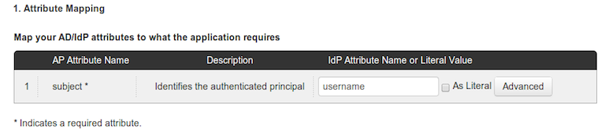
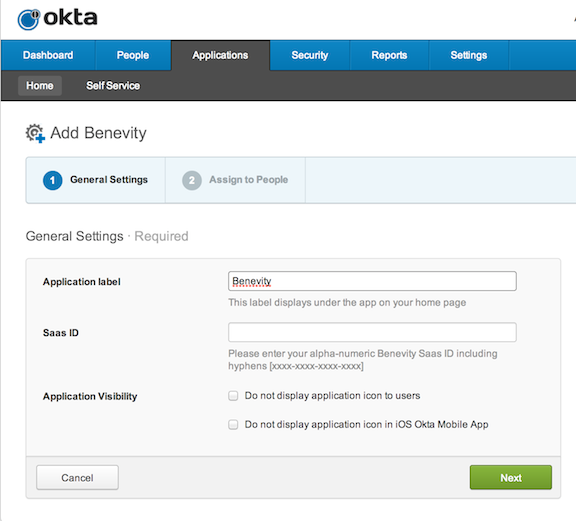

IMPORTANT INFORMATION
The Benevity SAML configuration on the SP side uses the Ping Identity Ping One Application Provider Services Portal. You must contact Benevity Support to manage any configuration changes. As of October 2013, Benevity charges their customers for SAML, both an upfront fee and an annual renewal amount. You can configure SSO for this application as required. Benevity does not have APIs available for user management. Verify that you can log in through your IdP endpoint.
Email Benevity to enable SAML and attach the following IDP metadata:
Sign in to Okta Admin app to have this variable generated for you.
In the Attribute mapping section in PingOne, set the IdP Attrubute Name to username, as shown below.

Benevity will provide you with a Saas ID. Enter this alphanumeric string in Okta under General Settings while configuring the app.
